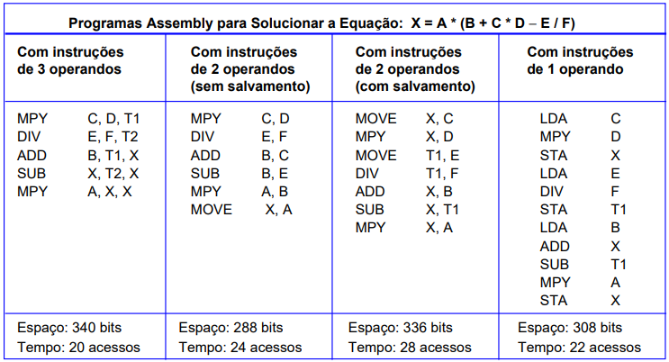

Organização de Computadores
- Aula 1 - Subsistemas de Memória 1
- Aula 2 - Subsistemas de Memória 2
- Aula 3 - Unidade central de processamento 1
- Aula 4 - Unidade central de processamento 2
- Aula 5 - Unidade central de processamento 3
- Aula 6 - Representação de dados
- Aula 7 - Representação de instruções
- Aula 8 - Execução de programas
- Aula 9 - Entrada e saída
- Aula 10 - Arquiteturas avançadas
Aula 1 - Subsistemas de Memória 1
[exibir conteúdo]1.1 - Hierarquia de Memória

1.2 - Cálculos em Memória Principal
1.2.1 - Playlist com exercícios resolvidos
1.2.2 - Outros exercícios resolvidos, em PDF
[voltar para o topo]
Aula 2 - Subsistemas de Memória 2
[exibir conteúdo]Memória Cache - Introdução
Políticas de Escrita em Memória Cache
Memória Cache - Mapeamento Direto vs Associativo
Mapeamento Direto, Mapeamento Associativo, Mapeamento Associativo por Conjunto
[voltar para o topo]
Aula 3 - Unidade central de processamento 1
[exibir conteúdo]Sobre o RDM e o REM
Registrador de dados de memória (RDM) possui um tamanho igual ao do barramento de dados
Registrador de endereços de memória (REM) possui um tamanho igual ao dos endereços de memória
Formatos de instruções

[voltar para o topo]
Aula 4 - Unidade central de processamento 2
[exibir conteúdo]Ciclo de instrução
4.1 Fluxograma de um ciclo de instrução
4.2 Passos para a execução de uma instrução
4.3 Ciclo de Busca, Decodificação e Execução de Instruções pela CPU - em Detalhes
[voltar para o topo]
Aula 5 - Unidade central de processamento 3
[exibir conteúdo]Pipelining de Instruções
Barramentos
Barramentos síncronos
Barramentos assíncronos
Arbitragem Centralizada do Barramento
Arbitragem Descentralizada do Barramento
Implementação de controle
Relação entre micro e macroinstruções
Integração UC e ULA - parte 1
Integração UC e ULA - parte 2
[voltar para o topo]
Aula 6 - Representação de dados
[exibir conteúdo]Padrão IEEE 754 - Representação em ponto flutuante
PS: Outros vídeos desse canal podem ajudar em outras aulas
[voltar para o topo]
Aula 7 - Representação de instruções
[exibir conteúdo]Quantidade de operandos
Variação de espaço e acessos à memória de acordo com a quantidade de operandos
Modos de endereçamento
[voltar para o topo]
Aula 8 - Execução de programas
[exibir conteúdo]Compiladores vs Interpretadores
[voltar para o topo]
Aula 10 - Arquiteturas avançadas
[exibir conteúdo]Arquiteturas RISC - Características
[voltar para o topo]